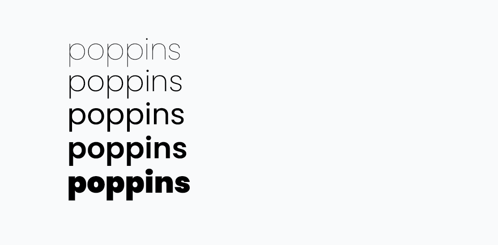

Poppins
By Julia Ma

Creator: Indian Foundary Type
Year: 2014
Poppins is geometric and san serif in nature. The characters are wide, the descenders are shorter, and the counters are nearly perfect circles. It was first released as an open-source typeface on Google fonts so it's free to use for anyone.
Below is an example of Poppins at work.

I do like how this website chose to use Poppins for their font since their website is filled with geometry. I think the website also is using Poppins for it's smaller texts. Poppins does range have a big range from thin to thick meaning that it's avaliable to be used for a wide range of purposes.
Personally, I think Poppins is a really nice typeface to use with a big size. When it's a big size, you can really see the clean geometric style and it's great at taking up white space.